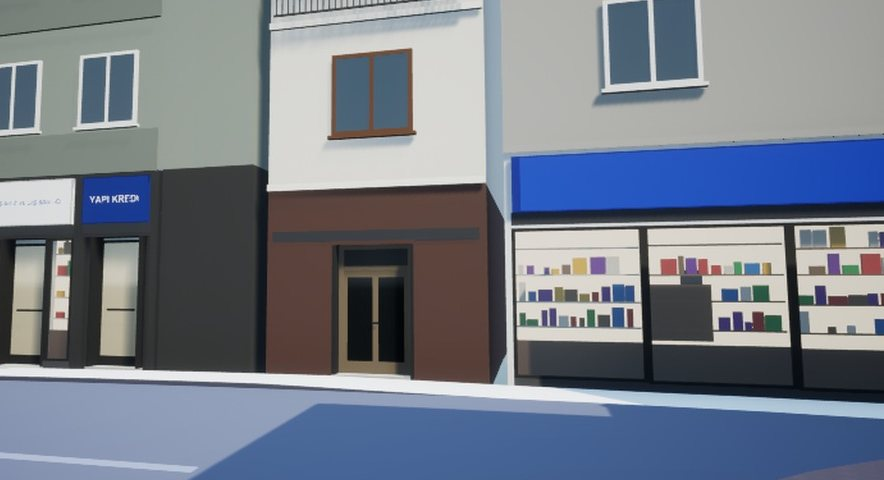
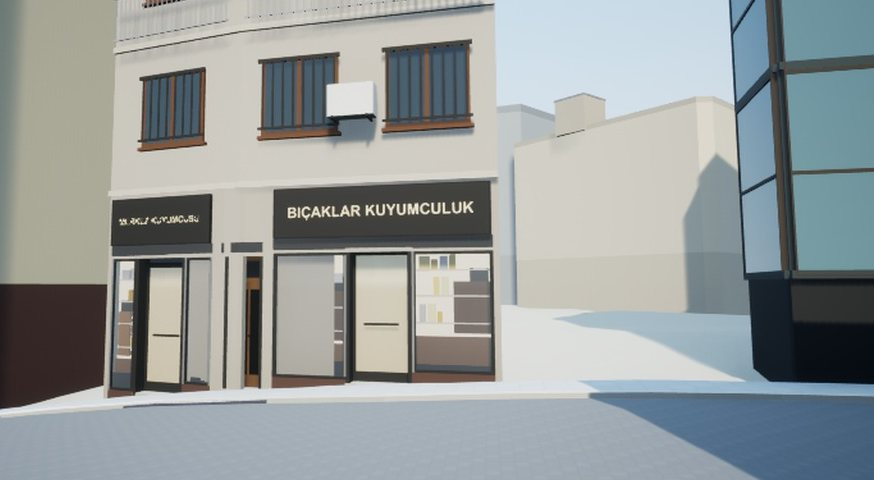
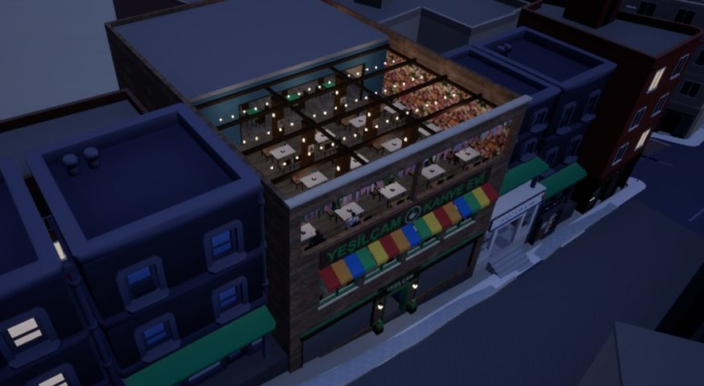

Hüsnüniyet çevresi, Şafak
OyundaSokak sokak
gerçek Bayrampaşa
Oyunun haritası gerçek Bayrampaşa'dan. Şimdi sıra binalarda: her sokağı, cepheleri ve dükkânlarıyla gerçeğine benzetiyoruz. Bu sayfa nereye gittiğimizi, neyin bittiğini ve sırada ne olduğunu anlatıyor. Tarih vermiyoruz; sıra var.
- 2 / 8 bölge oyunda
- 109 sokak, ~600 yeni bina
- B3 ve B5 hazırlanıyor
- Son sürüm OnlineV018
Nereye gidiyoruz?
Harita 8 bölgeye ayrıldı. Ana caddeler ve çarşı sokakları bina bina, gerçek dükkân adlarıyla yapılıyor; ara konut sokakları bölgenin binalarına benzeyen hazır tiplerle dolduruluyor. Her bölge bitince oyuna bir güncelleme olarak gelir.
-
Tamam
Deneme sokağı
Hüsnüniyet Sokağı'nda yöntemi denedik: cepheler, vitrinler, tabelalar, parke taş.
-
V018'de
Merkez: B1 + B2
Hüsnüniyet çevresi, Demirkapı, Abdi İpekçi ve Hilal. 109 sokakta yaklaşık 600 yeni bina.
-
Hazırlanıyor
Öbür ana caddeler: B3 + B5
Kenar ve İsmet Paşa; Yahya Kemal, Eti ve Uygur. Binalar hazırlanıyor.
-
Sonra
B6, B7, B8 ve bütün konut sokakları
Tuna, Sinop, Atışalanı, Kahraman, Uluhan, Hisar, Yeşil Cami. Bununla haritanın tamamı yenilenmiş olur.
-
En sonda
Simge yapılar, gece, performans
Okul, hastane, cami, belediye; gece ışıkları; bütün şehirde akıcılık. Rami tarafı (B4) da en sona kaldı; oyunda şimdilik "yapım aşamasında" tabelalı.
Demirkapı, Abdi İpekçi, Hilal
OyundaKenar, İsmet Paşa
HazırlanıyorYahya Kemal, Eti, Uygur
HazırlanıyorTuna, Sinop
SonraAtışalanı, Kahraman
SonraUluhan, Hisar, Yeşil Cami
SonraRami tarafı
En sondaSıradaki güncellemede düzelecekler
Yeni merkezi gezerken gördüklerimiz. Hepsi listede; sıradaki güncellemeyle gelecek.
- Yeşilçam'ın yanıKafenin çevresinde eskiden kalan binalar kaldırılacak; Yeşilçam hiçbir binayla çakışmadan duracak.
- Binaların içinde kalan lamba ve direklerSokak lambaları, tabela direkleri kaldırıma geri alınacak.
- Eski dükkânlardan kalan parçalarYeni binaların önünde ya da içinde görünen eski tabela ve vitrin parçaları gidecek.
- ZeminEski yol parçaları, kaldırım birleşimleri ve yaya geçitleri yeni sokaklara uyacak.
- Köşede kaldırıma park eden arabalarArabalar yola park edecek, köşeleri boş bırakacak.
Başka bir şey gördün mü? Oyunda F2'ye bas; ekran görüntüsü ve kısa açıklamayla bize gelir.
Geliştirici notları
Kısa kısa, ne yaptık, ne gördük.

Merkez yenilendi
B1 ve B2 açıldı: Hüsnüniyet'ten Demirkapı'ya, Abdi İpekçi'den Hilal'e 109 sokak, yaklaşık 600 bina. Binalar kaldırıma yanaşık, sokaklar parke ve küp taş.

Gerçek dükkân adları
Tabelalarda sokaktaki gerçek dükkânların adları var, düz yazıyla. Her dükkânın vitrini, tentesi, kapısı ayrı. Kendi mahalleni tanıyabiliyor musun?

Gece pencereleri
Gece olunca üst katlarda pencereler tek tek yanıyor. Şehir gece de yaşıyor gibi.

Arkadaş testi başladı: F2'ye bas
Takıldığın, havada duran, içinden geçtiğin bir şey mi var? F2'ye bas, bir cümle yaz. Ekran görüntüsü ve oyunun durumu da gelir; raporlar doğrudan bize ulaşıyor. Oyun çökerse başlatıcı da rapor göndermeyi sorar.